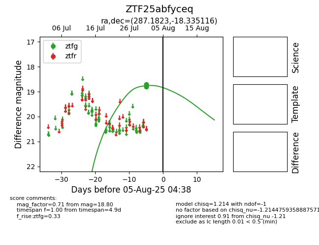

Target ZTF25abfyceq at 2025-08-05 04:38, see:
FINK: fink-portal.org/ZTF25abfyceq
Lasair: lasair-ztf.lsst.ac.uk/objects/ZTF25abfyceq
ALeRCE: alerce.online/object/ZTF25abfyceq
alt names
ZTF25abfyceq (ztf,fink)
coordinates:
equatorial (ra, dec) = (287.1823,-18.33512)
galactic (l, b) = (18.2872,-11.95360)
photometry
last ztfg=18.80
4 ztfg detections
